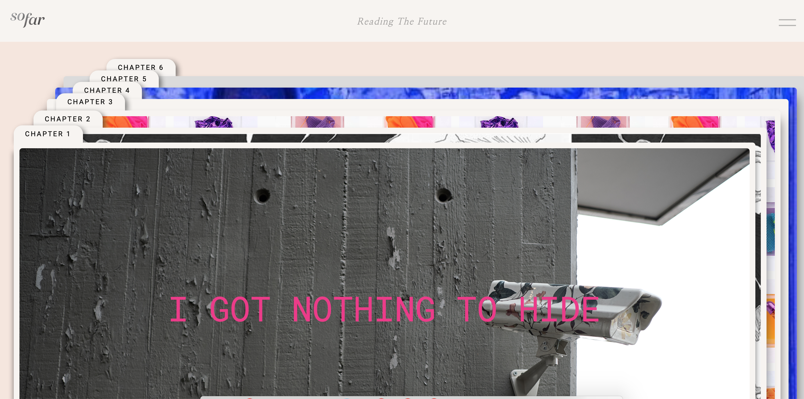
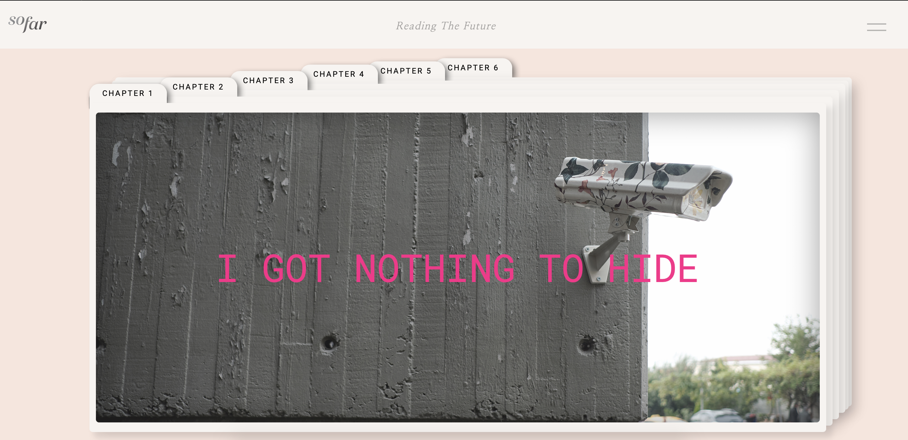
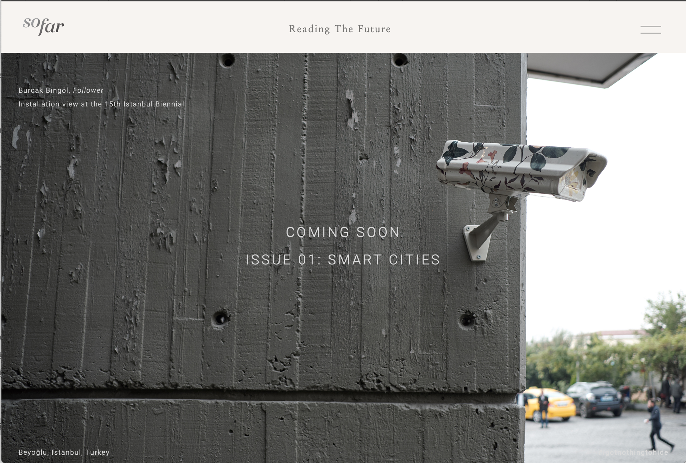
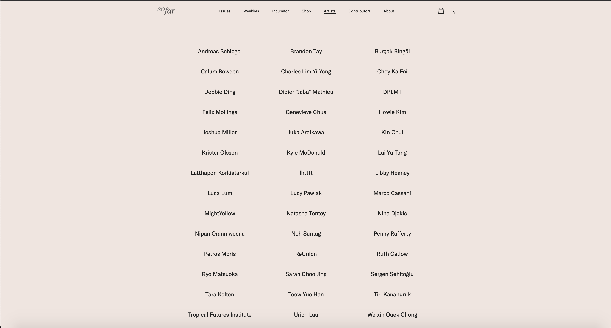
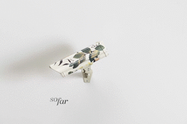

so-far.online
An online space for independent art. so-far.online is an independent online art gallery — a platform for artists working outside institutional contexts to show, sell, and archive work. Designed and developed using Webflow: editorial layout system, artist profile pages, exhibition archives, and navigation structure that puts the work first.




